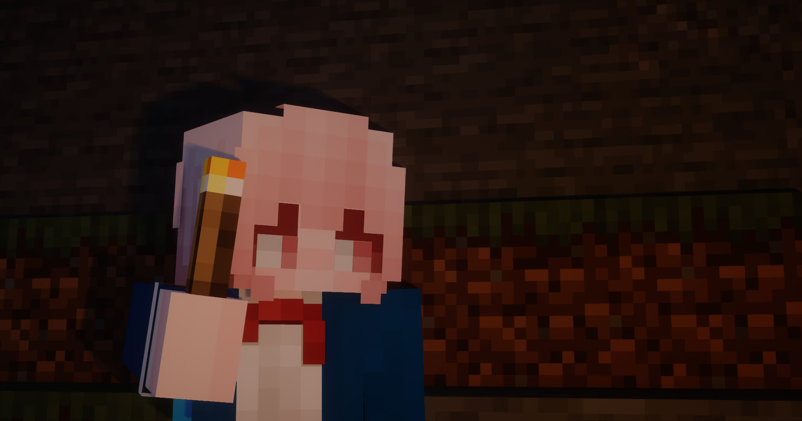
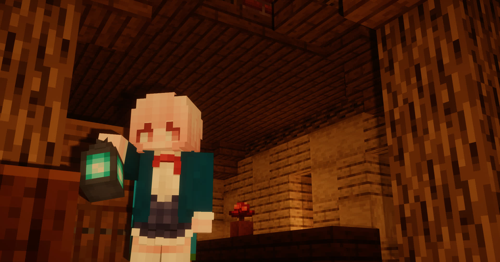
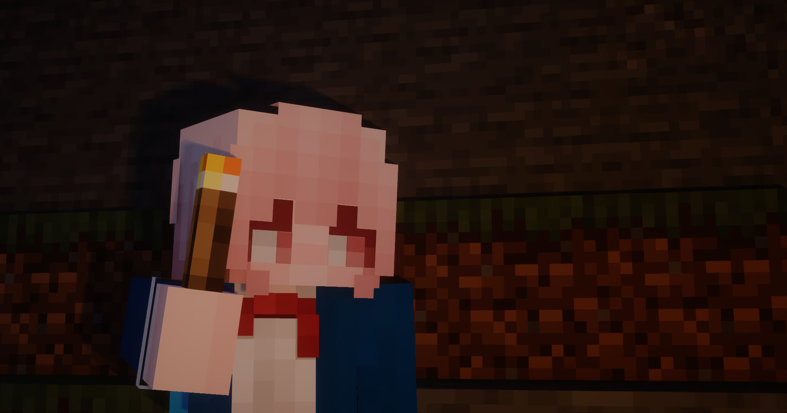
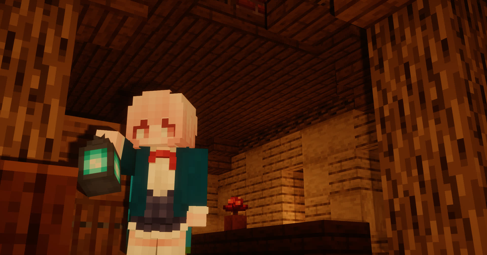

# 星の日記
#### 我內心的女生
## 寫在前面
我是誰應該不需要重複了，這個日記不是普通ㄉ日記，而是關於我的易性症。
我的指派性別是男性，但是，有一些東西我似乎和「他」們不太一樣。
如果你不知道這些是甚麼的話，可以看看我在寫論文時整理的常見定義，或者去看池魚的[MTF.Report](MTF.Report)

知道了這些，我們就可以開始了。
## 物語のはじめ
色情影片是我國中時期開始接觸的，但是我似乎喜歡將視角放在女生身上，感受她們的感覺。
有一天晚上，我到我妹妹的房間，找到她的裙子，在鏡子前比劃，當然我是穿不上的，年齡差太大。也許，那是我第一次對女裝產生興趣。
後來我買過兩次女裝，第一次是在藏起來的時候丟了，也許是被媽媽或者保母發現了，我不知道，他們沒有和我說關於這個事情的任何話題。第二次是小鳥遊ホシノ的cosplay服裝，還參加了漫展。
那一次是我保密程度最高的一次，那次漫展是在其他城市，我將衣服打包，前往酒店過了一夜，第二天才穿上去漫展。結束後立刻打包藏起來回家，直奔我的房間......
到這裡，我大抵只是個**異裝者**......
在我**接觸外網**，尤其是**X**（前Twitter）後，我認識到了這個社群——MTF
在我因為反對中國共產黨被國安局制裁後，我開始關注這個社群。
我從小就是一個渴望被愛、又喜歡愛別人的孩子。獨裁政權下的mtf群體的生存環境是很困難，自然我就成為了簡體中文mtf社群的友跨群體。
>活不下去了，都活不下去了，每天都在死人。
>去年十二月是一组政策直接卡死，一点活路都没有了
這些是中國在雌二醇禁令後他們的話。
我一直在試圖幫助他們。
甚至到我~~雌墮~~出現性別焦慮那天（民國114年、令和七年7月8日）我還在進行著mtf社會學課題的研究......
##今のあたし
我的性取向現在還是女生，也許是我變得討厭男生了吧，我不喜歡那種陽剛之氣，更討厭社會倫理給予男生的種種所謂「責任」的包袱。
**我更喜歡別人説我可愛，而不是説我帥氣。**
>かっこいいじゃなくて、可愛いって呼ばせてほしい❤
~~我幻想我穿著裙子，依偎在那個我喜歡的大姐姐的懷裏......~~
我不介意我不受承認，甚至保留男生的生活方式，只是想讓自己可以做自己......
## 畏懼的那些
我喜歡搞獨特，什麽東西我都想和別人不一樣。
中文我用繁體；社交軟體我用X、Line、Discord；甚至電話卡都是香港的......
但是很顯然我的同學似乎很排擠我這個異類。雖然和同學的社交關係也説得過去...
但是我如果真的成為了mtf，我不知道他們以後是什麽眼光。
向我的父母出櫃更是我畏懼的一點。
在教育中，我母親是偏保守派，我父親卻是個激進派。我父親對現代年輕人的很多東西都有瞭解。
但問題是，我不清楚他對mtf的看法......
如果我父親也不支持，那麽他們會怎麽認為我？
如果我的父親支持，我又怕和我母親吵起來。我不想看到這樣。我想要和平地解決這些事情......
### 民國114年7月7日
晚上失眠了。我似乎感覺到心裡有什麼東西，她似乎不是剛開始出現，而是一直在那裏盤縮著。
那天晚上我抱著枕頭哭了不知多長時間，我想，大概是那個「她」在因為無法控制我的身體而哭吧。
那一天之後，我的焦慮開始了。
---
### 民國114年7月8日
晚上又失眠了，雖然所謂失眠只是相對於他們而已了（注：我在和我母親和弟弟妹妹旅行）。這天晚上，我哭出了聲。
我抱緊我的枕頭，像是抱住了一個女孩。每收緊一下，都感覺一陣難受的感覺擴散全身。最後我不小心引來了母親。
我打發她回去了，過一會，我也睡着了。
### 民國114年7月9日
我在飛機上......
我心裡的那個女生，又哭了。我的身體的控制權，在慢慢被「她」接管......
好難受，想找一個東西抱著......
也許，她是一個愛哭的女生吧......
>#### 病歴いち：人格分裂
あたしの心で、女の子が住んでいます。ずっと。
あたしオナニーが好きじゃなくて、彼女とあたしの男と交尾するわけじゃないのに......
# 現在正在進行的項目
## 1. [MTF大調查](https://naniang.hsnej.fun/)
這是我（HosinoEJ）在民國114年（2025年）發起的一項公益性的社會調查。旨在為社會和學術上提供一個MTF群體現狀數據，以此讓人們認識到MTF群體的現狀。
## 2. [MTF數據分析](https://chiyu.it/posts/2025/report1)
感謝推友[@Chiyuyu520](https://x.com/Chiyuyu520)的數據提供，目前本人在數據分析中...
# 社交網路
### 1. [X](https://x.com/HosinoEJ)
### 2. [YouTube](https://youtube.com/@HosinoEJ)
### 3. [GitHub](https://github.com/HosinoEJ)
### 4. [Discord](https://reurl.cc/8Dz8d7)
### 5. [Bilibili](https://space.bilibili.com/1140685131)
### 6. [mail](mailto:hosinoeiji@gmail.com)
 YouTube
|
YouTube
|
 GitHub
|
GitHub
|
 Discord
Discord


 


